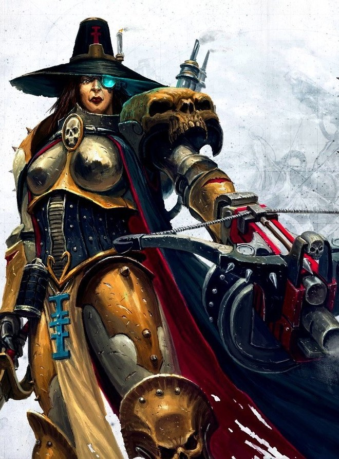
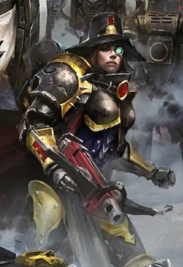

Katarinya Greyfax
| Katarinya Greyfax | |
|---|---|
| Inquisitor of the Ordo Hereticus | |
 Greyfax in the Era Indomitus, with her Condemnor boltgun Artwork © Games Workshop | |
| Inquisitor of the Ordo Hereticus | |
| Service | M41 – present, interrupted by captivity on Solemnace[a] |
| Faction | Puritan (Monodominant) |
| Born | M41 (records sealed) |
| Status | Active in the Era Indomitus |
| Allegiance | Imperium of Mankind; the Inquisition |
| Bodyguard | Tempestus Scions of the 55th Kappic Eagles |
| Wargear | Master-crafted Condemnor boltgun; the power sword Tyrantslayer; psyocculum; psyk-out grenades |
| Psychic powers | Telepathy; detection of lies; the Aura of Oppression |
| Known for | The Fall of Cadia (999.M41); the Celestinian Crusade; the restoration of Roboute Guilliman; the recovery of the Eye of Night |
Katarinya Greyfax is an Inquisitor of the Ordo Hereticus, a Puritan known within her own Ordo for being utterly without mercy. She is a psyker of some power, whose telepathy lets her detect any lie, and her peers have more than once pointed out the irony that a witch hunter should be a witch. Captured by the Necron Overlord Trazyn the Infinite, she spent an unknown period in his collection on Solemnace before he released her on Cadia in 999.M41.[1][2]
Greyfax fought in the last battle beneath Cadia, escaped the planet's destruction with the Celestinian Crusade, and was present at Macragge when the primarch Roboute Guilliman was restored to life. The event overturned her belief that the Living Saint Celestine was a fraud. She followed Guilliman on the Terran Crusade to Terra, and in the Era Indomitus was sent by him to recover a relic called the Eye of Night, which he believed might help to understand the Great Rift.[1][3]
Captivity
[edit]Greyfax's early career is recorded only in sealed Ordo Hereticus files. At some point, probably some centuries before the end of the 41st millennium, she and her bodyguard of Tempestus Scions from the 55th Kappic Eagles were taken by Trazyn the Infinite and kept in a Tesseract Labyrinth as part of his "Imperial collection". Trazyn infected her with mindshackle scarabs that prevented her from harming him. She has given her own account of this period to her Ordo, which has sealed it.[1][4]
Cadia
[edit]
In 999.M41, during the Thirteenth Black Crusade, Trazyn came to Cadia to help the Archmagos Belisarius Cawl understand the Cadian Pylons. When the Black Legion broke into the caverns beneath the Elysion Fields, Trazyn released part of his collection to hold them, and Greyfax and her Scions were among the warriors who came out of the Labyrinth. She found herself in a galaxy she barely recognised: Battle Sisters following a winged Living Saint, Space Marines with mutations, and the loyal soldiers of Cadia accepting both. When she tried to fire on Trazyn, the mindshackle stopped her, and the Necron told her that her priorities needed re-evaluating.[1][5]
As Abaddon the Despoiler prepared to kill the wounded Celestine, Greyfax struck him with a psychic assault that froze his blade in mid-stroke, then emptied her boltgun into him. Her intervention, and the sacrifice of the Cadian 8th, bought the Saint the moments she needed. Cawl activated the pylons, Abaddon was driven off, and Celestine stabbed him from behind as Lord Castellan Ursarkar Creed lay at his feet. Abaddon then destroyed Cadia by dropping the Blackstone Fortress Will of Eternity on it.[1][6]
The Celestinian and Terran Crusades
[edit]Greyfax, Cawl, Celestine and the Black Templars Marshal Amalrich led the evacuation of some three million survivors from Cadia. Calling themselves the Celestinian Crusade, they were driven to the ice moon Klaisus, where they were saved by the Ynnari of Yvraine and led through the Webway to Ultramar. On the way to Macragge, Cawl purged Greyfax of Trazyn's scarabs, a painful process she endured almost without sign.[1][7]
In the Temple of Correction on Macragge, Cawl and Yvraine restored Guilliman to life while the Celestinians and the Ultramarines held off the forces of Chaos. Greyfax had come to suspect that Celestine's divinity was real, and the return of a living primarch convinced her. In the middle of the battle she apologised to the Saint. She then joined Guilliman's Terran Crusade through the Maelstrom and the Webway to Luna and Terra.[1][3]
The Eye of Night
[edit]
Soon after he became Lord Commander, Guilliman summoned Greyfax to the Hall of Glories in the Imperial Palace. He had found in the Inquisition's records a pattern in the Great Rift like the workings of the ancient priests of Davin, and he sent her to the Gothic Sector to find where it began: the ruins of the Cardinal World of Savaven, destroyed by Abaddon's Planet Killer in the Gothic War of the mid-41st millennium.[3][1]
With the Grey Knights Justicar Genhain and his squad, aboard the warship Malleus Rex, Greyfax found a psychic beacon among Savaven's fragments and, in a crypt beneath a ruined cathedral, a sarcophagus containing the armour of a Grey Knight Paladin. It held the spirit of the dead Inquisitor Phaedus Falconet Horst, who had no memory of how he had died. Horst led them to the Chaos seer Moriana on a daemon world at the edge of the Eye of Terror; she revealed that Horst had already found the Eye of Night while alive. Her daemonic familiar guided them to Vastiagard, the Pillar of Spite Fulfilled, a tower held by a Daemon Prince of Tzeentch who wore Horst's own body.[1]
The Imperials tried to cast the daemon out of the body by joining their minds in the Warp, and failed. At Horst's request Greyfax destroyed his body with her boltgun. Inside its broken skull she found a black gem the size of her fist, wreathed in darkness: the Eye of Night. Its use, and what Guilliman learned from it, have been sealed.[1][b]
Wargear and powers
[edit]Greyfax carries a master-crafted Condemnor boltgun, a combi-weapon that pairs a boltgun with a launcher for blessed silver stakes meant for corrupted psykers, and the master-crafted power sword Tyrantslayer. She uses a psyocculum, which lets her see psychic emanations as a halo around witches, and carries psyk-out grenades, a rare anti-psyker weapon otherwise used by the Grey Knights and the Culexus Temple. Her own psychic gifts include the telepathy that reveals lies to her and the power her Ordo calls the Aura of Oppression, by which she crushes the minds of those around her and leaves them unable to act. It was this power, turned on a single mind, that stopped Abaddon's blade beneath Cadia.[2][8]
Character
[edit]Greyfax holds that evil has no shades and that purity admits no compromise; she has killed thousands for lesser sins, including other Inquisitors. Those who serve her learn not to act without her order. The events of the Era Indomitus have tested her certainty more than once, and she has accepted the help of a Necron, Aeldari heretics and a Chaos witch, each time under protest. Her Ordo describes her as feared even by her peers.[2]
Timeline
[edit]| Date | Event |
|---|---|
| c. M41 (estimated) | Captured by Trazyn the Infinite |
| 999.M41 | Released beneath Cadia; attacks Abaddon; Fall of Cadia |
| 999.M41 | Celestinian Crusade; Klaisus; restoration of Guilliman on Macragge |
| c. 999.M41–000.M42 | Terran Crusade |
| c. 001–012.M42 | Quest for the Eye of Night |
See also
[edit]Notes
[edit]References
[edit]- ^ a b c d e f g h i j Thorpe, Gav. Eye of Night (Audiobook). Black Library.
- ^ a b c Gathering Storm - Part One - Fall of Cadia (7th Edition), pp. 65-89, 124, 132-133. Games Workshop.
- ^ a b c Gathering Storm - Part Three - Rise of the Primarch (7th Edition), pp. 4-93. Games Workshop.
- ^ Thorpe, Gav. Eye of Night (Audiobook). Black Library.
- ^ Gathering Storm - Part One - Fall of Cadia (7th Edition), pp. 65-89, 124, 132-133. Games Workshop.
- ^ Gathering Storm - Part Three - Rise of the Primarch (7th Edition), pp. 4-93. Games Workshop.
- ^ Thorpe, Gav. Eye of Night (Audiobook). Black Library.
- ^ Gathering Storm - Part One - Fall of Cadia (7th Edition), pp. 65-89, 124, 132-133. Games Workshop.